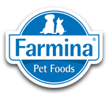

+++
title = "Farmina Slovakia s. r. o. - Marketingová Asistentka"
slug = "54"
+++

<div class="container mb-5">
    <div class="row justify-content-around">
        <div class="col-6 col-md-2 mt-3"></div>
        <div class="col-md-8">
            <h1>Farmina Slovakia s. r. o.</h1>
            <h2>Marketingová Asistentka</h2>
            <p>
                <strong>Miesto: </strong>Bratislava<br/>
                <strong>Forma: </strong>TPP/dohoda<br/>
                <strong>Flexi faktor: </strong>polovičný úväzok, práca z domu<br/>
                <strong>Plat: </strong>600 EUR/mesiac<br/>
                <strong>Očakávaný nástup: </strong>dohodou<br/>
                <strong>Dátum pridania ponuky: </strong> 26.8.2022<br/>
            </p>
            <h2>O firme </h2>
            <p>Farmina je spoločnosť vyrábajúca hyperprémiové krmivo pre domáce zvieratá – psy a mačky. Veríme, že každé
                domáce zviera je jedinečné, so špecifickými výživovými potrebami. Preto okrem krmiva kladieme dôraz na
                správne zostavený výživový plán a monitorovanie zdravotných parametrov domáceho maznáčika.
            </p>
            <p>
                Farmina hľadá kolegu na čiastočný úväzok, ktorý by sa pripojil k jej tímu, ktorý by nám pomohol s
                poskytovaním a prekladom marketingových materiálov, sociálnych sietí a bude pravou rukou branch &
                marketingového manažéra . Pozícia je vhodná pre matky na materskej dovolenke alebo študentky.
            </p>

            <h2>Náplň práce</h2>
            <p>Aká bude vaša práca u nás?</p>
            <ul>
                <li><b>Lokalizácia marketingových materiálov</b> - Vzdelávanie koncových zákazníkov je pre nás veľmi
                    dôležité, a preto pripravujeme širokú škálu materiálov. Tieto materiály sú pripravené v angličtine a
                    musíme im dať správny miestny význam, aby bol vytvorený obsah zrozumiteľný a pútavý. Nemusíte sa
                    starať o profesionálne texty. K dispozícii vám bude miestny veterinárny manažér, ktorý vám vždy
                    pomôže s odbornou terminológiou.
                <li><b>Obsah pre sociálne siete</b> – Pripravujeme zaujímavý obsah aj na sociálnych sieťach pre
                    koncových zákazníkov. Všetky dokumenty získavame v angličtine a lokalizujeme ich. Preložené
                    príspevky je potrebné zverejniť a postarať sa o zodpovedanie otázok a správ.
                <li><b>Správa webových stránok</b> – Farmina vytvorila vlastný redakčný systém pre webové stránky.
                    Stránka je pravidelne aktualizovaná o nový obsah. Je potrebné vyriešiť prehľad všetkých aktuálne
                    dostupných produktov.
                <li><b>Podpora tímu konzultantov a Branch & Marketing Manager</b> – Marketingový tím tvoria kolegovia,
                    ktorí trávia väčšinu času v odbore. Marketingový asistent pomáha s možnými operáciami - objednávanie
                    marketingových materiálov zo skladu, kontakt s obchodmi so zvieratami.
            </ul>

            <h2>Požiadavky</h2>
            <p>Bez čoho sa nezaobídete?</p>
            <ul>
                <li>Stredoškolské/vysokoškolské vzdelanie, záujem o domáce zvieratá, výživa zvierat
                <li>Výborná znalosť slovenskej gramatiky
                <li>Anglický jazyk – komunikatívna úroveň
                <li>Nezávislosť, spoľahlivosť
            </ul>

            <h2>Doplňujúce info</h2>
            <ul>
                <li>Práca pre medzinárodnú spoločnosť ponúkajúcu prémiové produkty a služby
                <li>Pravidelné školenie
                <li>Flexibilný pracovný čas, práca väčšinou z domu
                <li>Notebook, telefón
            </ul>


            <h2>Ďalší postup</h2>
            <p>V prípade záujmu pošlite svoj životopis cez tento
                <a href="https://aplikuj.hrlink.pl/aplikacja/Asistent-ka-pre-riadite-ov-doba-ur-it-A/6004-3927-25-8fb-3375.html"
                   target="_blank">link </a></p>
        </div>
        <div class="col-md-2"></div>
    </div>
    <div class="row">
        <div class="col offset-md-2 mt-5">{{< back >}}</div>
    </div>
</div>
